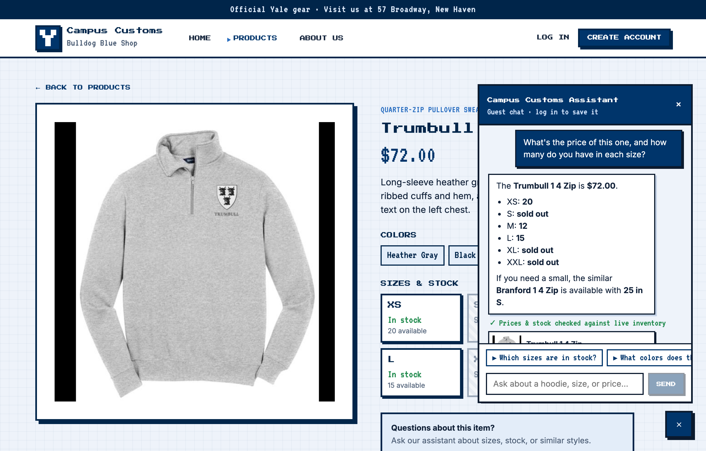
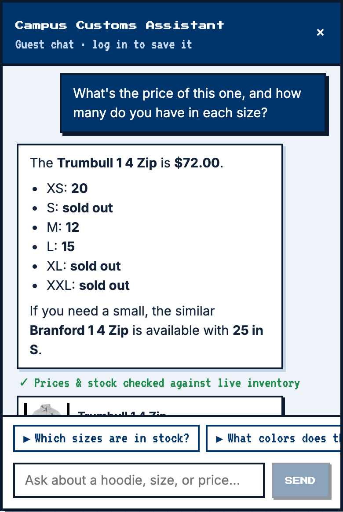
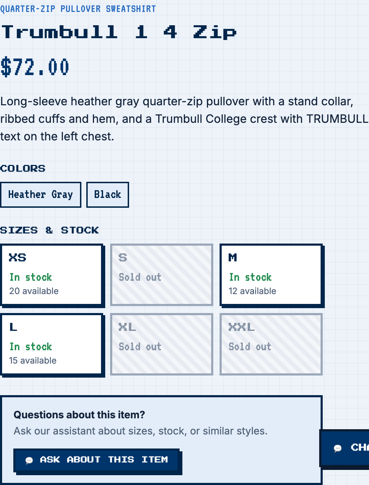
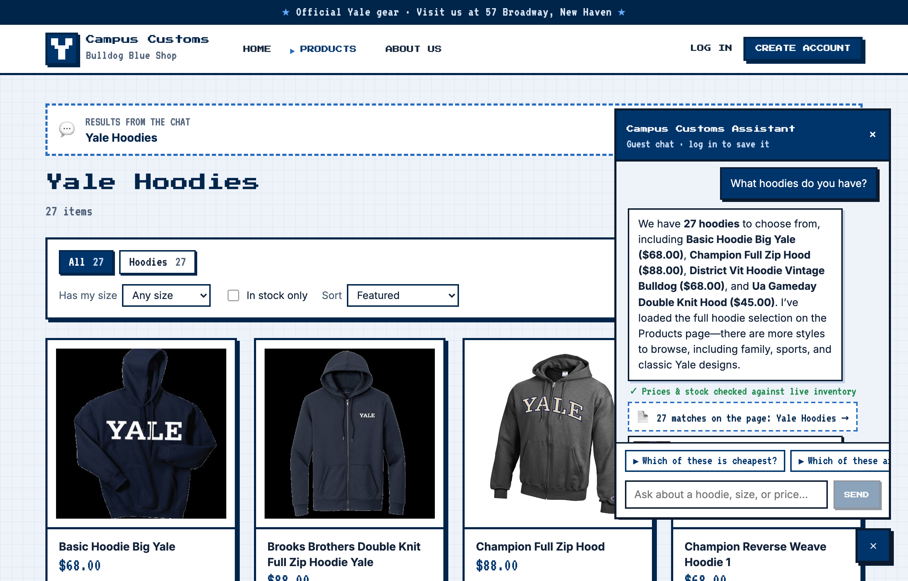
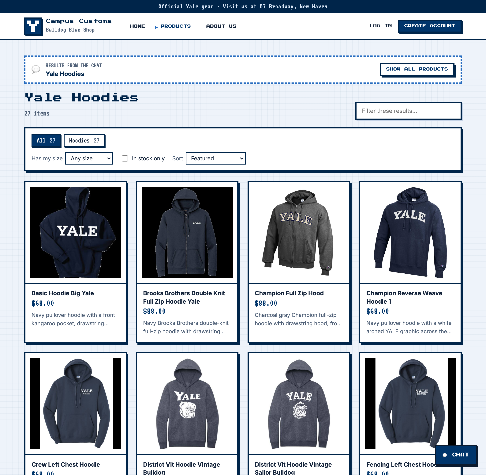
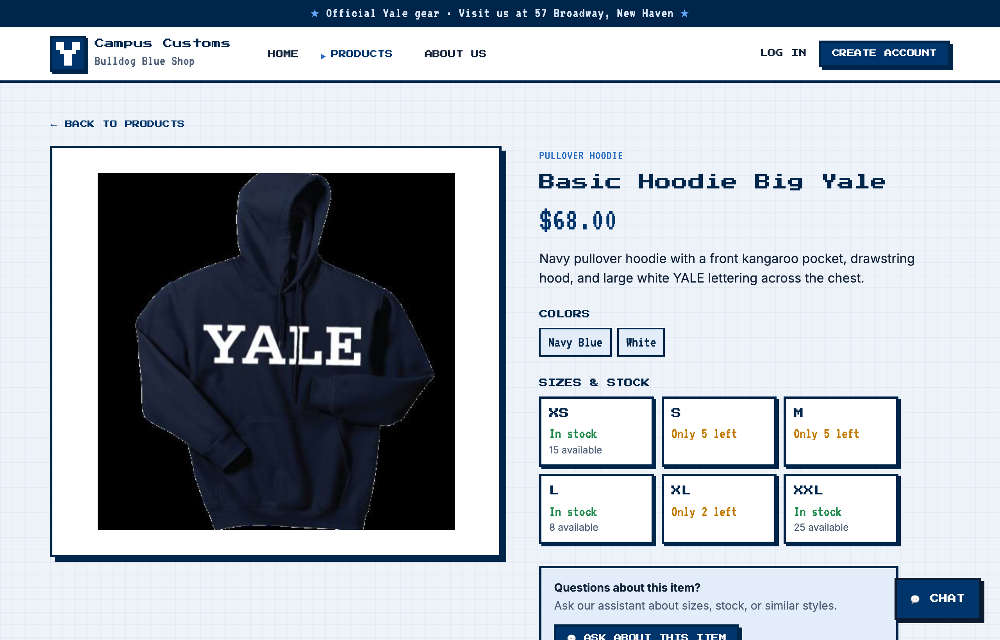
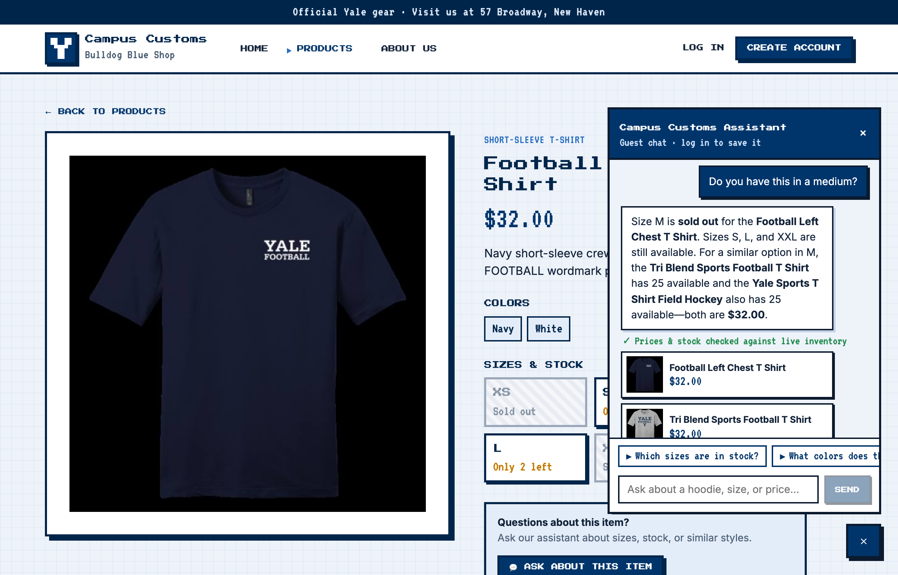
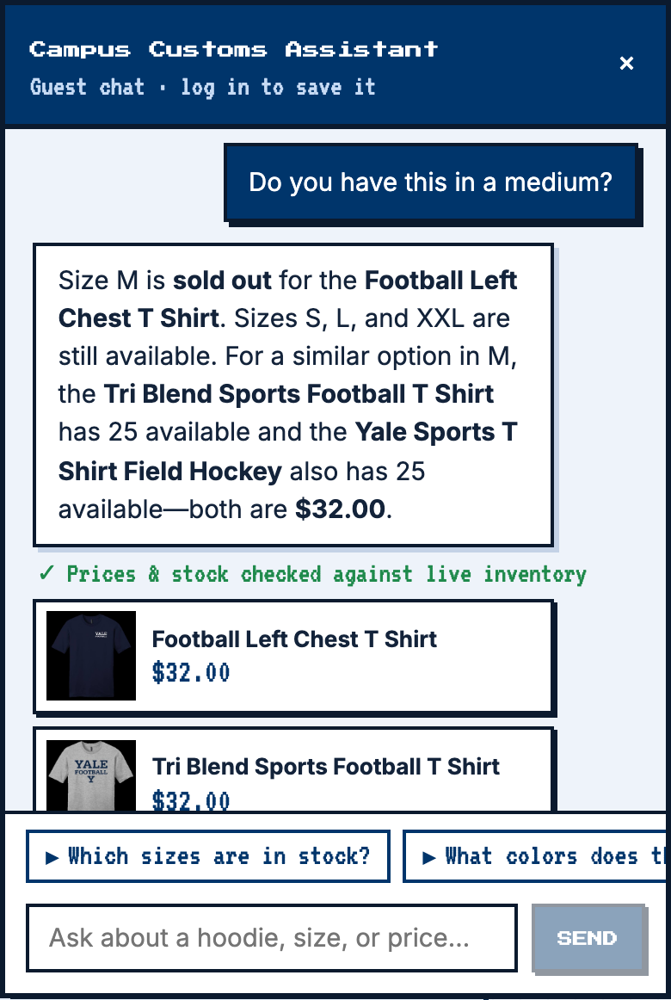

Summary
1. Chat checks an item's price and inventory PASS
What this proves: On the Trumbull 1 4 Zip product page, the shopper asks about “this one” and the assistant answers with the exact price and per-size stock from campus_customs.db, clearly marking sold-out sizes. Every number matches the database table below and the page's own size tiles.



Evidence: question, reply, and database check
Shopper typed: “What's the price of this one, and how many do you have in each size?”
The Trumbull 1 4 Zip is $72.00. XS: 20 S: sold out M: 12 L: 15 XL: sold out XXL: sold out If you need a small, the similar Branford 1 4 Zip is available with 25 in S. ✓ Prices & stock checked against live inventory Trumbull 1 4 Zip $72.00 Branford 1 4 Zip $72.00
Database (campus_customs.db)
| Size | Quantity (DB) |
|---|---|
| XS | 20 |
| S | 0 |
| M | 12 |
| L | 15 |
| XL | 0 |
| XXL | 0 |
| Price | $72.00 |
Automated checks
- ✔ Reply quotes the database price $72.00
- ✔ XS: database 20 → reply says “20”
- ✔ S: database 0 → reply says “sold out”
- ✔ M: database 12 → reply says “12”
- ✔ L: database 15 → reply says “15”
- ✔ XL: database 0 → reply says “sold out”
- ✔ XXL: database 0 → reply says “sold out”
- ✔ Reply shows the ✓ verified-against-inventory note
2. Category question → search-result cards appear on the page PASS
What this proves: Asking “What hoodies do you have?” from the Home page makes the agent search the catalogue and return structured matches; the site jumps to the Products page and renders all 27 hoodies as clickable cards (image, name, price, short description) under a “Results from the chat” banner.



Evidence: question, reply, and database check
Shopper typed: “What hoodies do you have?”
We have 27 hoodies to choose from, including Basic Hoodie Big Yale ($68.00), Champion Full Zip Hood ($88.00), District Vit Hoodie Vintage Bulldog ($68.00), and Ua Gameday Double Knit Hood ($45.00). I’ve loaded the full hoodie selection on the Products page—there are more styles to browse, including family, sports, and classic Yale designs. ✓ Prices & stock checked against live inventory 📄 27 matches on the page: Yale Hoodies → Basic Hoodie Big Yale $68.00 Champion Full Zip Hood $88.00 District Vit Hoodie Vintage Bulldog $68.00 Ua Gameday Double Knit Hood $45.00
Database (campus_customs.db)
| Query | Result |
|---|---|
| Hoodies in catalogue (garment_type like '%hood%') | 27 |
| Cards on page | 27 |
Automated checks
- ✔ URL became a chat-results page (products?title=Yale+Hoodies&category=hoodie)
- ✔ 27 cards rendered = 27 hoodies in the database
- ✔ Every card has an image, name, price and description
- ✔ First card links to /products/basic-hoodie-big-yale and opens its detail page
3. Problem 9 usability feature: in-stock alternatives for a sold-out size PASS
What this proves: Medium is sold out for the Football Left Chest T Shirt, so instead of a dead end the agent says so clearly, then uses the new find_alternatives tool to suggest similar shirts that really are in stock in M (verified in the table below). The reply also shows the ✓ accuracy-check note from Problem 9.


Evidence: question, reply, and database check
Shopper typed: “Do you have this in a medium?”
Size M is sold out for the Football Left Chest T Shirt. Sizes S, L, and XXL are still available. For a similar option in M, the Tri Blend Sports Football T Shirt has 25 available and the Yale Sports T Shirt Field Hockey also has 25 available—both are $32.00. ✓ Prices & stock checked against live inventory Football Left Chest T Shirt $32.00 Tri Blend Sports Football T Shirt $32.00 Yale Sports T Shirt Field Hockey $32.00
Database (campus_customs.db)
| Product | Size M (DB) | Price (DB) |
|---|---|---|
| Football Left Chest T Shirt | 0 | $32.00 |
| Tri Blend Sports Football T Shirt | 25 | $32.00 |
| Yale Sports T Shirt Field Hockey | 25 | $32.00 |
Automated checks
- ✔ Database: Football Left Chest T Shirt size M = 0
- ✔ Reply clearly says M is sold out
- ✔ Reply suggests at least one alternative (2 found)
- ✔ Alternative “Tri Blend Sports Football T Shirt” really has M in stock (DB: 25, $32.00)
- ✔ Alternative “Yale Sports T Shirt Field Hockey” really has M in stock (DB: 25, $32.00)
Re-run with .venv/bin/python tests/app_check.py while the backend and frontend are running. Click any screenshot to open it full size.